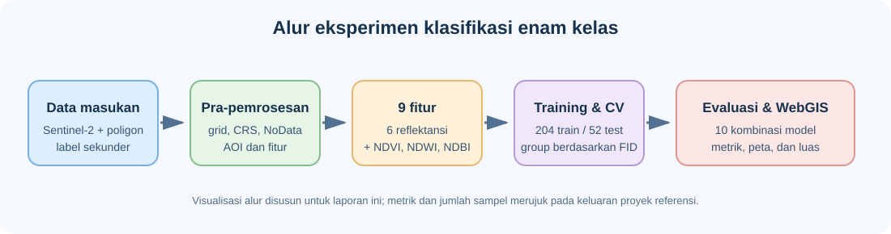
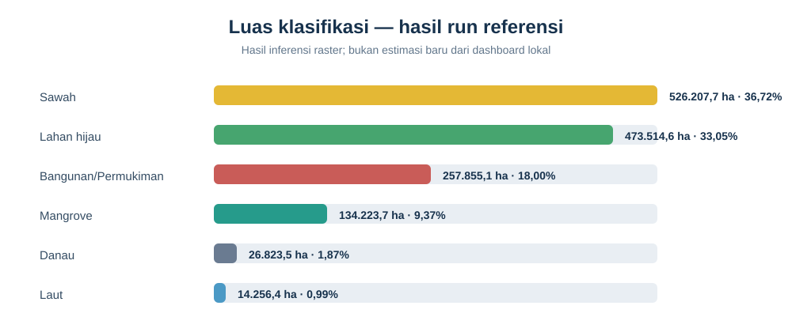
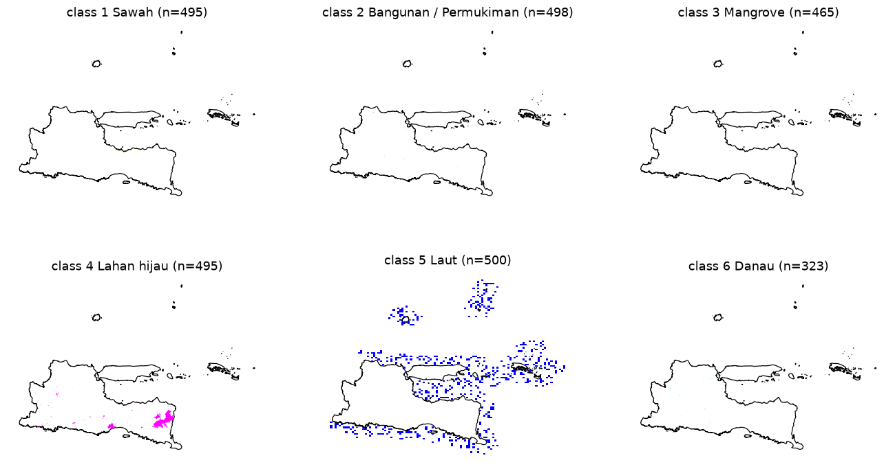
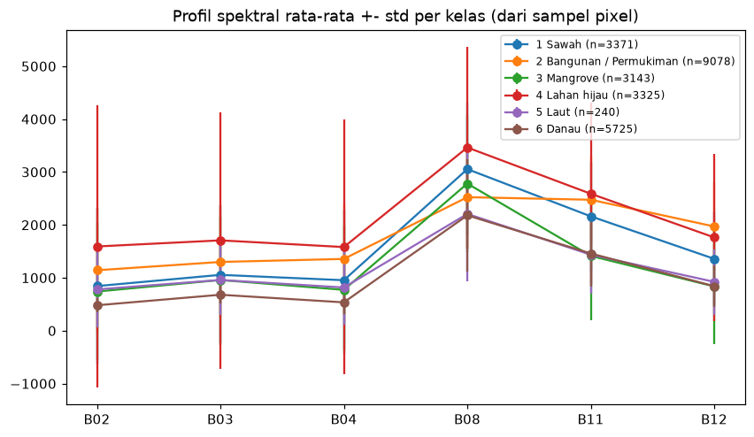
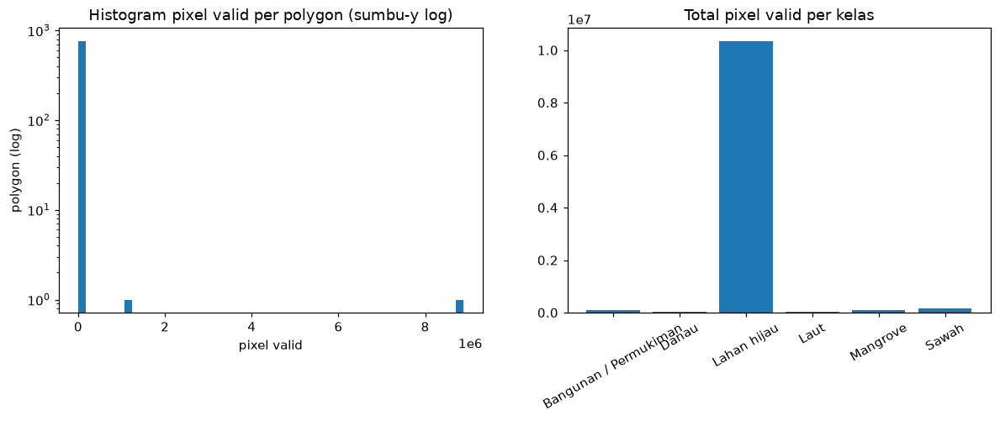
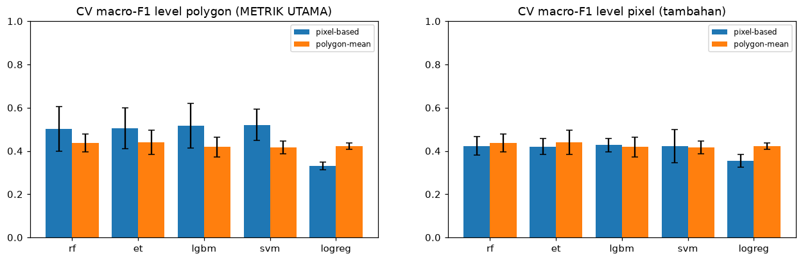
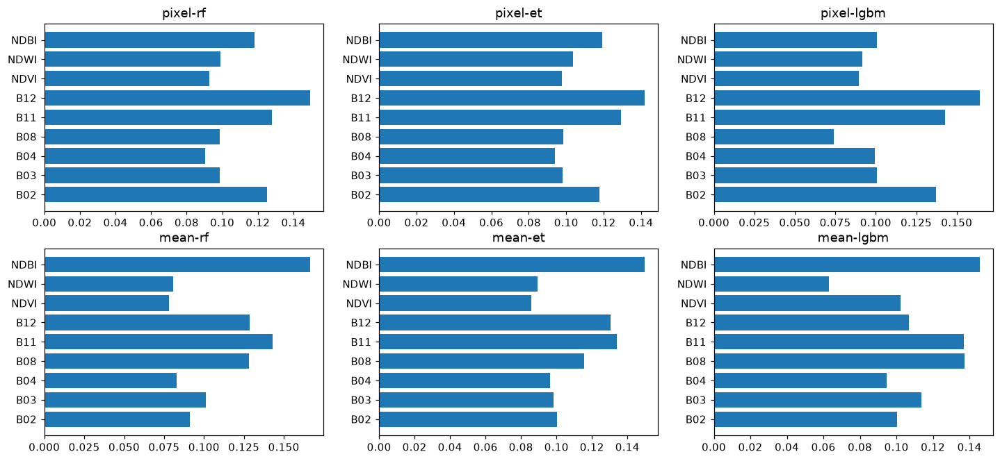
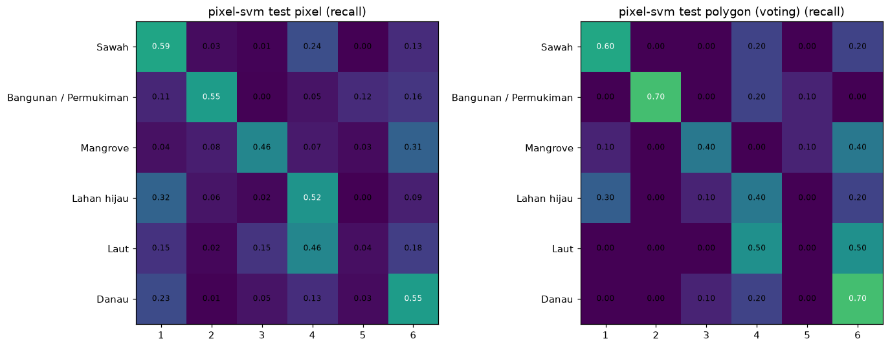
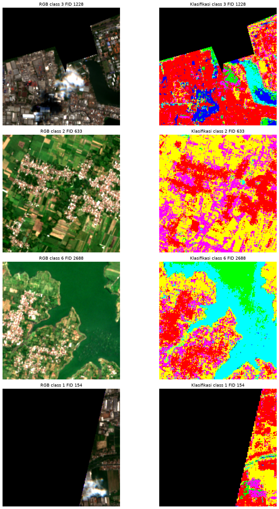
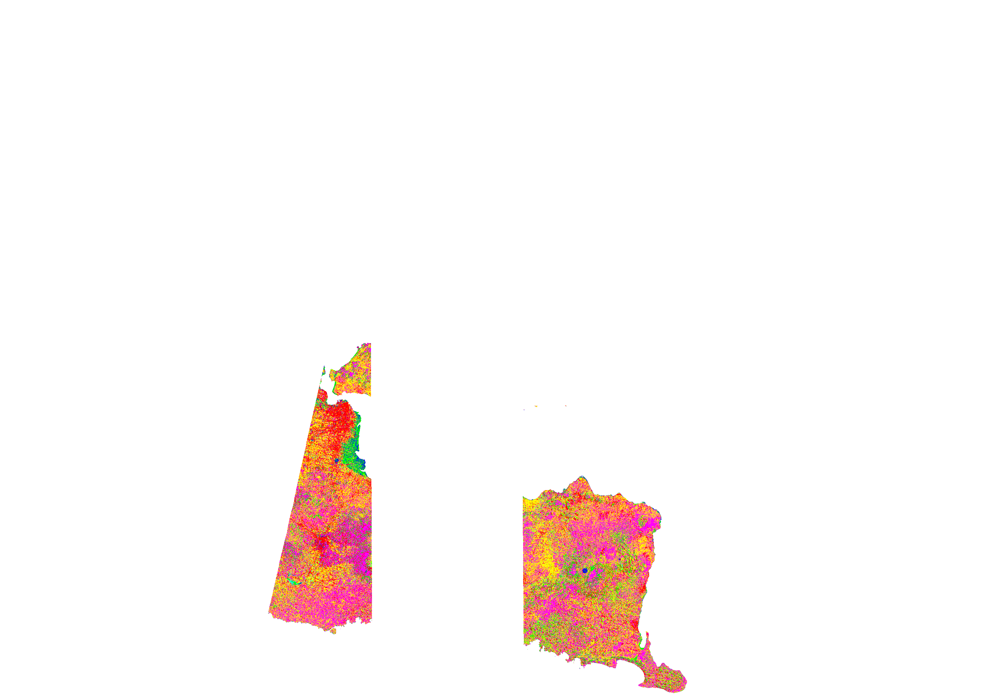

UTS SIG: Analisis Spasial Penutup Lahan dan Kebijakan di Jawa Timur#
Dari citra Sentinel-2 ke enam kelas tutupan lahan, evaluasi model, dan WebGIS

Asal hasil yang ditampilkan. Notebook, tabel evaluasi, raster, dan gambar hasil yang tersedia berasal dari eksperimen repository PSD-Klasifikasi-Lahan, yang menjadi acuan tugas. Berkas raster Sentinel-2 mentah untuk menjalankan ulang seluruh proses tidak tersedia di folder
datarepository tersebut. Karena itu, hasil berikut ditandai sebagai hasil eksperimen referensi, bukan hasil run ulang dari input lokal.
Laporan mengikuti enam bab dengan potongan kode, tabel output, visualisasi, dan peta seperti alur proyek referensi. Data serta hasil eksperimen yang ditampilkan dirujuk secara terbuka ke sumbernya.
Hasil eksperimen singkat#
Eksperimen referensi memilih SVM RBF berbasis fitur per piksel berdasarkan CV Macro-F1 (0,521); Macro-F1 test poligonnya 0,474. Raster seluruh wilayah dibuat dengan Random Forest karena lebih cepat untuk inferensi.
Kelas |
Luas referensi (ha) |
Proporsi |
|---|---|---|
Sawah |
526.207,7 |
36,72% |
Lahan hijau |
473.514,6 |
33,05% |
Bangunan/Permukiman |
257.855,1 |
18,00% |
Mangrove |
134.223,7 |
9,37% |
Danau |
26.823,5 |
1,87% |
Laut |
14.256,4 |
0,99% |

Lihat juga gambar peta RGB dan klasifikasi dan overlay hasil pada batas Jawa Timur di repository sumber.


Angka, tabel, dan peta di atas adalah keluaran eksperimen referensi. Jangan mengutipnya sebagai hasil pengukuran baru tanpa menjalankan ulang notebook menggunakan raster sumber yang sesuai.
Bab 1 — Business Understanding#
1.1 Latar belakang#
Informasi penutup lahan membantu memahami distribusi fisik permukaan, seperti vegetasi, kawasan terbangun, dan badan air. Citra Sentinel-2A menyediakan pengamatan multispektral yang dapat digunakan untuk membuat klasifikasi awal secara konsisten pada wilayah luas. Peta hasil klasifikasi perlu dibaca bersama konteks skala, kualitas data, waktu akuisisi, dan ketidakpastian label.
Dalam eksperimen referensi, cakupan analisis adalah Provinsi Jawa Timur dengan enam kelas target: sawah, bangunan/permukiman, mangrove, lahan hijau, laut, serta danau. Data sampelnya berasal dari sumber sekunder Kementan, BIG, dan Natural Earth. Hasil merupakan eksperimen berdasarkan label sekunder, bukan peta tematik resmi atau validasi lapangan.
1.2 Tujuan dan pertanyaan analisis#
Menyusun alur pengumpulan, pemeriksaan, dan prapemrosesan Sentinel-2A serta label referensi untuk Jawa Timur.
Membentuk fitur spektral dan indeks untuk membedakan enam kelas.
Membandingkan model klasifikasi pada data uji yang dipisahkan secara spasial.
Menampilkan jumlah sampel aktual, metrik per kelas, confusion matrix, dan peta pratinjau di atas basemap satelit.
Menyediakan bahan eksplorasi untuk membahas kawasan terbangun, pertanian, mangrove pesisir, vegetasi, dan badan air dalam konteks kebijakan tata ruang.
Pertanyaan: seberapa baik model membedakan enam kelas pada poligon yang tidak digunakan untuk training, dan model/representasi fitur mana yang memberi Macro-F1 tertinggi pada validasi silang berbasis poligon?
1.3 Penggunaan hasil dan batas kebijakan#
Peta dapat membantu memilih lokasi untuk pemeriksaan lanjutan terhadap RTRW, RDTR, kawasan mangrove, area resapan, dan badan air. Peta klasifikasi citra tidak menetapkan hak kepemilikan atau legalitas lahan, tidak mengubah zonasi, dan bukan pengganti peta resmi maupun verifikasi lapangan. Keputusan tata ruang harus merujuk pada dokumen berwenang yang berlaku.
1.4 Definisi kelas studi#
Kelas |
Makna operasional dalam eksperimen |
|---|---|
Sawah |
Sampel poligon Kementan |
Bangunan/Permukiman |
Kelas permukiman dari sampel BIG |
Mangrove |
Kelas mangrove dari sampel BIG |
Lahan hijau |
Gabungan kelas vegetasi/tutupan hijau dari sampel BIG |
Laut |
Poligon laut Natural Earth |
Danau |
Waduk/danau dari sampel BIG |
Label merupakan sampel referensi sekunder, bukan validasi lapangan baru. Terminologi penutup lahan nasional mengacu pada SNI 7645-1:2014 sebagai referensi konseptual; penggabungan kelas disederhanakan untuk tujuan eksperimen dan tidak menyatakan kepatuhan penuh terhadap legenda nasional.
1.5 Keluaran eksperimen yang menjadi acuan#
Repository referensi menyediakan 2.823 poligon sumber dan memilih 256 poligon untuk eksperimen (50 untuk masing-masing lima kelas pertama dan 6 poligon laut). Pembagian yang tersimpan menggunakan 204 poligon training dan 52 testing. Angka ini merujuk pada data dan hasil eksperimen PSD-Klasifikasi-Lahan, bukan jumlah dari input yang diunggah ke dashboard UTS ini.

Peta batas kabupaten/kota tersedia di repository output referensi.

Bab 2 — Data Understanding#
2.1 Inventaris dan status data#
Dataset |
Fungsi |
Data eksperimen referensi |
|---|---|---|
Sentinel-2 L2A |
Fitur spektral |
Metadata mencatat 6 band, 10 m, EPSG:32749; raster mentah tidak ada di folder |
Batas Jawa Timur |
AOI |
|
Sampel label enam kelas |
Training/testing |
GeoJSON dan GPKG tersedia di |
Data tematik sekunder |
Label kelas |
Kementan (sawah), BIG (bangunan, mangrove, lahan hijau, danau), Natural Earth (laut) |
Proyek referensi menyediakan 2.823 poligon sumber. Pemilihan data modeling menggunakan 256 poligon: 50 per kelas Sawah, Bangunan, Mangrove, Lahan hijau, dan Danau, serta 6 poligon Laut.
Kelas |
Poligon sumber |
|---|---|
Sawah |
500 |
Bangunan/Permukiman |
500 |
Mangrove |
500 |
Lahan hijau |
500 |
Laut |
500 |
Danau |
323 |
Total |
2.823 |
Jumlah poligon sumber bukan jumlah training/testing; hanya sampel terpilih yang masuk ke eksperimen.
2.2 Pengumpulan data#
Gunakan produk Sentinel-2 Level-2A (Bottom-of-Atmosphere surface reflectance) dengan tanggal komposit yang dicatat. Komposit multi-temporal yang telah dimask awan dan bayangan awan lebih sesuai daripada satu citra berawan. Sampel poligon enam kelas pada proyek acuan dikumpulkan dari data sekunder Kementan, BIG, dan Natural Earth. Catat sumber, tanggal pengambilan, dan CRS.
Metadata citra dan cuplikan pemeriksaan#
Metadata run referensi mencatat koleksi Sentinel-2 L2A, komposit median
1–2 September 2025, enam band, maksimum tutupan awan 20%, grid 10 m, dan
proyeksi EPSG:32749. Profil raster yang tersimpan menunjukkan ukuran
59.412 × 41.323 piksel. Raster citra sumber sendiri tidak disertakan di folder
data.
Contoh pemeriksaan metadata/output yang tersimpan:
import json
from pathlib import Path
profile = json.loads(
Path("outputs/tables/s2_profile.json").read_text(encoding="utf-8")
)
print(profile["bands"], profile["crs"], profile["res"])
print(profile["width"], profile["height"], profile["total_pixel"])
['B02', 'B03', 'B04', 'B08', 'B11', 'B12'] EPSG:32749 [10.0, 10.0]
59412 41323 2455082076
Berikut contoh kode Earth Engine untuk mengambil komposit yang dapat direproduksi; ganti asset path AOI sesuai akun yang digunakan.
var roi = ee.FeatureCollection(
'projects/PROJECT_ANDA/assets/jawa_timur'
).geometry();
function maskClouds(image) {
var scl = image.select('SCL');
var clear = scl.neq(0).and(scl.neq(1)).and(scl.neq(3))
.and(scl.neq(8)).and(scl.neq(9)).and(scl.neq(10)).and(scl.neq(11));
return image.updateMask(clear);
}
var bands = ['B2', 'B3', 'B4', 'B8', 'B11', 'B12'];
var s2 = ee.ImageCollection('COPERNICUS/S2_SR_HARMONIZED')
.filterBounds(roi)
.filterDate('2025-09-01', '2025-09-03')
.filter(ee.Filter.lte('CLOUDY_PIXEL_PERCENTAGE', 70))
.map(maskClouds)
.select(bands)
.median()
.clip(roi)
.toInt16();
Export.image.toDrive({
image: s2, description: 'JawaTimur_Sentinel2_2025',
region: roi, crs: 'EPSG:32749', scale: 10, maxPixels: 1e13
});
2.3 Band Sentinel-2A#
Instrumen MSI Sentinel-2 mengukur 13 band pada resolusi asli 10 m, 20 m, atau 60 m. Eksperimen referensi memakai B02, B03, B04, B08, B11, dan B12. Dashboard Streamlit terpisah di repository UTS menerima sepuluh band. Resampling band 20 m menyamakan grid, tetapi tidak menambah informasi spasial.
Band |
Nama |
Panjang gelombang tengah (µm) |
Resolusi |
Kegunaan umum |
|---|---|---|---|---|
B1 |
Coastal aerosol |
0.443 |
60 m |
Aerosol pesisir/koreksi atmosfer |
B2 |
Blue |
0.490 |
10 m |
Warna tampak dan air dangkal |
B3 |
Green |
0.560 |
10 m |
Warna vegetasi dan respons air |
B4 |
Red |
0.665 |
10 m |
Serapan klorofil dan batas vegetasi |
B5 |
Red Edge 1 |
0.705 |
20 m |
Kondisi vegetasi |
B6 |
Red Edge 2 |
0.740 |
20 m |
Gradien red-edge |
B7 |
Red Edge 3 |
0.783 |
20 m |
Vegetasi dan biomassa |
B8 |
Near Infrared |
0.842 |
10 m |
Vegetasi sehat dan pemisahan air |
B8A |
Narrow NIR |
0.865 |
20 m |
Respons NIR sempit |
B9 |
Water vapour |
0.945 |
60 m |
Uap air atmosfer |
B10 |
Cirrus |
1.375 |
60 m |
Deteksi cirrus |
B11 |
SWIR 1 |
1.610 |
20 m |
Kelembapan dan lahan terbangun |
B12 |
SWIR 2 |
2.190 |
20 m |
Kelembapan, tanah, kebakaran |
2.4 Kualitas dan keterbatasan referensi#
Label berasal dari beberapa sumber sekunder dengan skema berbeda, sehingga definisi kelas perlu dibaca bersama atribut sumbernya. Piksel campuran, awan/bayangan, beda waktu citra dan sumber poligon, serta ketidakseimbangan jumlah poligon dapat memengaruhi evaluasi.
Profil spektral hasil run referensi#

Lihat juga batas Jawa Timur di repository sumber.

Gambar dan jumlah poligon pada bab ini bersumber dari keluaran eksperimen referensi, bukan dari eksperimen input dashboard UTS ini.
Bab 3 — Data Preprocessing#
3.1 Pemeriksaan dan penyelarasan#
Sebelum eksperimen, periksa jumlah band, CRS, transform, resolusi, rentang nilai, NoData, dan cakupan tumpang-susun. GeoTIFF referensi berisi enam band yang digunakan pada grid 10 m EPSG:32749. Batas wilayah dan sampel poligon diselaraskan dengan CRS raster; komposit citra sudah difilter awan sebelum ekspor. Profil raster sumber mencatat 59.412 × 41.323 piksel. Raster inferensi tersedia sebagai GeoTIFF 44 MB pada folder output referensi.
3.2 Crosswalk label#
Label sampel diseragamkan menjadi enam ID kelas: 1 Sawah, 2 Bangunan/Permukiman, 3 Mangrove, 4 Lahan hijau, 5 Laut, dan 6 Danau. Kelas asal dipertahankan pada atribut sumber; misalnya Sawah berasal dari Kementan, vegetasi dan permukiman dari BIG, dan Laut dari Natural Earth.
3.3 Fitur model#
Eksperimen referensi memakai enam band reflektansi dan tiga indeks, total sembilan fitur. Berikut deskripsi fitur yang cocok dengan metadata eksperimen:
Fitur |
Rumus |
Kegunaan umum |
|---|---|---|
B02 |
Reflektansi biru |
Warna tampak/pesisir |
B03 |
Reflektansi hijau |
Warna tampak dan air |
B04 |
Reflektansi merah |
Serapan klorofil |
B08 |
Reflektansi NIR |
Vegetasi sehat dan air |
B11 |
Reflektansi SWIR-1 |
Kelembapan/permukaan terbangun |
B12 |
Reflektansi SWIR-2 |
Kelembapan/tanah |
NDVI |
|
Kehijauan vegetasi |
NDWI |
|
Indeks air Green–NIR |
NDBI |
|
Respons lahan terbangun |
Contoh perhitungan indeks pada array NumPy:
import numpy as np
# Urutan input: B02, B03, B04, B08, B11, B12
B02, B03, B04, B08, B11, B12 = bands
def normalized_difference(a, b, eps=1e-6):
denominator = a + b
return np.divide(
a - b,
denominator,
out=np.zeros_like(a, dtype=np.float32),
where=np.abs(denominator) > eps,
)
features = np.stack([
B02, B03, B04, B08, B11, B12,
normalized_difference(B08, B04), # NDVI
normalized_difference(B03, B08), # NDWI
normalized_difference(B11, B08), # NDBI
])
print(features.shape)
(9, tinggi_raster, lebar_raster)
Eksperimen referensi memakai sembilan fitur tersebut. Dashboard interaktif terpisah di repository UTS saat ini memiliki pipeline 18 fitur; skor di Bab 5 adalah hasil notebook referensi, bukan output dashboard tersebut.
3.4 Sampel dan pembagian spasial#
Split referensi yang tersimpan berisi 204 poligon training dan 52 testing dari 256 poligon. Pembagian dilakukan per poligon/FID, distratifikasi dengan ID kelas, sehingga FID tidak muncul pada kedua subset:
from sklearn.model_selection import train_test_split
train_polygons, test_polygons = train_test_split(
polygons,
test_size=0.20,
random_state=42,
stratify=polygons["class_id"],
)
assert set(train_polygons["FID"]).isdisjoint(test_polygons["FID"])
print(len(train_polygons), len(test_polygons))
204 52
Contoh di atas menjelaskan pemisahan berdasarkan poligon; file split aktual dapat dilihat di
polygon_split.csv.
Dashboard UTS sendiri memakai sampling dan pembagian spasial yang berbeda;
hasilnya tidak sama dengan split referensi.

Bab 4 — Modeling#

4.1 Target dan rancangan model#
Target terdiri atas enam kelas: Sawah, Bangunan/Permukiman, Mangrove, Lahan hijau, Laut, dan Danau. Setiap sampel memiliki sembilan fitur Sentinel-2 dari Bab 3. Eksperimen membandingkan dua representasi (fitur per-pixel dan rata-rata fitur per-poligon); seluruh model pada representasi yang sama menggunakan split yang sama.
Pada eksperimen referensi, dua representasi fitur (pixel dan rata-rata
poligon/mean) dibandingkan dengan lima model: Random Forest, Extra Trees,
LightGBM, SVM RBF, dan Logistic Regression. Total ada sepuluh kombinasi.
Contoh kode CV berkelompok berdasarkan FID:
from sklearn.model_selection import StratifiedGroupKFold, cross_val_score
cv = StratifiedGroupKFold(n_splits=5, shuffle=True, random_state=42)
scores = cross_val_score(
estimator,
X_train,
y_train,
groups=fid_train,
cv=cv,
scoring="f1_macro",
n_jobs=-1,
)
print(scores.mean(), scores.std())
Pixel SVM: CV Macro-F1 = 0.521 (rerata fold; tabel test lengkap ada di Bab 5)
Satu group FID diperlakukan sebagai satu poligon saat validasi agar piksel dari poligon yang sama tidak tersebar ke fold training dan validasi.
Variabel estimator, X_train, y_train, dan fid_train diisi dari tahap
preprocessing notebook. Kode tersebut menghasilkan skor per fold; nilai
ringkas eksperimen tersimpan pada tabel Bab 5.
4.2 Training dan inferensi#
Bentuk fitur pixel dan ringkasan rata-rata fitur per poligon.
Pilih 256 poligon dengan distribusi kelas yang dicatat di Bab 2.
Pisahkan 204 poligon training dan 52 testing berdasarkan FID.
Bandingkan lima estimator pada dua representasi fitur.
Pilih SVM pixel berdasarkan CV Macro-F1; ukur juga performa pada test.
Jalankan Random Forest pixel untuk membuat raster seluruh wilayah karena inferensinya lebih cepat.
SVM dan Logistic Regression memerlukan standardisasi fitur. Seluruh langkah preprocessing model harus di-fit pada data training saja.
4.3 Batas klaim#
Split berdasarkan FID mengurangi kebocoran antar piksel dalam poligon yang sama, tetapi tidak menjadikan sumber label independen atau menggantikan validasi lapangan. Model yang menang adalah yang paling sesuai pada data dan protokol eksperimen tersebut; hasil tidak otomatis berlaku pada musim/tahun lain atau seluruh kondisi lapangan.
Dashboard UTS di repository ini masih membandingkan empat model pada fitur berbeda dan split blok piksel. Tabel pada Bab 5 berasal dari hasil run referensi; jangan menyebutnya sebagai metrik dashboard UTS.

Bab 5 — Evaluation#

5.1 Jumlah kelas dan data#
Ada 6 kelas. Eksperimen referensi memilih 256 poligon dan membaginya menjadi 204 training dan 52 testing. Angka adalah jumlah poligon, bukan piksel.
Kelas |
Total |
Training |
Testing |
|---|---|---|---|
Sawah |
50 |
40 |
10 |
Bangunan/Permukiman |
50 |
40 |
10 |
Mangrove |
50 |
40 |
10 |
Lahan hijau |
50 |
40 |
10 |
Laut |
6 |
4 |
2 |
Danau |
50 |
40 |
10 |
Total |
256 |
204 |
52 |
Distribusi test merujuk pada split eksperimen referensi. Dashboard UTS sendiri baru menampilkan jumlah aktual setelah input eksperimen diunggah.
5.2 Metrik yang dilaporkan#
Accuracy: proporsi seluruh prediksi benar.
Balanced accuracy: rerata recall tiap kelas, agar kelas kecil tetap diperhitungkan.
Macro-F1: rerata F1 antar kelas tanpa bobot jumlah piksel; menjadi kriteria pemilihan model.
Cohen’s κ: kesepakatan prediksi dengan label setelah mengoreksi peluang kesepakatan acak.
Confusion matrix dan precision/recall/F1 tiap kelas: menunjukkan jenis kelas yang tertukar.
Hasil run referensi: Macro-F1#
Representasi |
Model |
CV Macro-F1 |
Test Macro-F1 (poligon) |
Test accuracy (poligon) |
|---|---|---|---|---|
Pixel |
SVM RBF |
0,521 |
0,474 |
0,538 |
Pixel |
LightGBM |
0,517 |
0,450 |
0,519 |
Pixel |
Extra Trees |
0,505 |
0,447 |
0,519 |
Pixel |
Random Forest |
0,501 |
0,465 |
0,538 |
Pixel |
Logistic Regression |
0,331 |
0,391 |
0,500 |
Mean poligon |
Logistic Regression |
0,422 |
0,466 |
0,596 |
Mean poligon |
Extra Trees |
0,440 |
0,404 |
0,481 |
Mean poligon |
Random Forest |
0,437 |
0,444 |
0,519 |
Mean poligon |
LightGBM |
0,418 |
0,450 |
0,538 |
Mean poligon |
SVM RBF |
0,416 |
0,444 |
0,558 |
SVM pixel memiliki CV Macro-F1 tertinggi (0,521). README referensi menyebut
Random Forest pixel dipakai untuk raster akhir karena inferensinya lebih cepat;
model terbaik untuk evaluasi dan model pembuat peta bukan selalu sama.
Sumber tabel:
test_vs_cv.csv.
5.3 Validitas dan ketidakpastian#
Holdout berdasarkan FID dan CV dengan group poligon mencegah satu poligon masuk ke kedua subset/fold. Metrik tetap mengukur kesesuaian dengan sampel sekunder, bukan akurasi lapangan independen. Untuk klaim tematik, kumpulkan sampel validasi lapangan atau interpretasi visual independen dengan rancangan sampling terdokumentasi.
Sumber ketidakpastian utama adalah beda definisi kelas antar sumber, ketidaklengkapan/ketelitian poligon, piksel campuran, awan/bayangan, serta ketidakcocokan waktu antara citra dan poligon. Cantumkan tanggal, resolusi, CRS, seed, dan jumlah sampel ketika melaporkan hasil final.
Lihat confusion matrix test dan sebaran skor CV di repository sumber.


Bab 6 — WebGIS & Deployment#
6.1 Tampilan WebGIS#
Dashboard Streamlit menyediakan tujuh halaman:
Ringkasan — jumlah kelas/sampel, model terpilih, Macro-F1, dan perbandingan model.
Alur Data → Model — status input, uraian proses, dan tombol menjalankan eksperimen.
Peta Klasifikasi — komposit RGB, overlay kelas, legenda, dan basemap satelit interaktif melalui Folium/Leaflet.
Luas per Kelas — jumlah piksel prediksi dan estimasi hektare jika CRS raster terproyeksi serta unit luas terdefinisi.
Evaluasi Model — metrik model, metrik tiap kelas, dan confusion matrix.
Data & Unduhan — GeoTIFF klasifikasi pratinjau dan tabel CSV.
Metodologi — kelas, fitur, pembagian spasial, dan batas interpretasi.
Google Satellite pada Folium merupakan XYZ tile, bukan WMS. Peta interaktif dipakai untuk eksplorasi visual; atribusi dan ketentuan layanan penyedia basemap harus dipatuhi. Hasil GeoTIFF aplikasi diturunkan skalanya untuk pratinjau, bukan produk klasifikasi resolusi penuh.
Peta overlay di atas adalah hasil inferensi run referensi. Peta interaktif
Folium, raster GeoTIFF 44 MB, tabel luas, dan grafik evaluasi tersedia di
folder outputs proyek sumber.
Halaman statis menampilkan hasil yang sudah tersimpan; halaman ini tidak
menjalankan ulang model saat dibuka.
6.2 Menjalankan aplikasi#
Source aplikasi dan petunjuk terbaru:
cd C:\PSD\PSD\gis_uts
python -m venv .venv
.\.venv\Scripts\Activate.ps1
python -m pip install -r requirements.txt
streamlit run app.py
Dashboard UTS saat ini menerima GeoTIFF Sentinel-2 10-band, GeoTIFF WorldCover, GeoJSON batas provinsi, dan GeoJSON danau/ranu. Pipeline ini berbeda dari eksperimen referensi (enam band dan poligon Kementan/BIG/Natural Earth). Keluaran dashboard baru dihitung setelah inputnya tersedia; gambar dan skor statis di bab ini tetap diberi label sebagai hasil run referensi.
6.3 Deployment dan web statis#
GitHub Pages menampilkan laporan enam bab. Aplikasi interaktif berjalan
terpisah di Streamlit Community Cloud. Pemilik repository perlu membuat app
dari branch main dengan main file PSD/gis_uts/app.py, kemudian mengunggah
input data melalui aplikasi. Belum ada URL Streamlit sampai deployment
dijalankan dan berhasil.
6.4 Implikasi kebijakan dan referensi#
Gunakan peta sebagai bahan pemilihan lokasi pemeriksaan RTRW/RDTR, bukan sebagai penetapan zonasi atau bukti status lahan. Periksa legenda dan skala nasional sebelum menyatakan pemetaan sesuai standar.
Badan Standardisasi Nasional. SNI 7645-1:2014, Klasifikasi penutup lahan — Bagian 1: Skala kecil dan menengah. Verifikasi status/edisi pada katalog BSN sebelum penggunaan normatif.
Sentinel-2 Level-2A, band dan resolusi (Microsoft Planetary Computer).
Kementerian Pertanian — sumber sampel sawah yang dicatat pada metadata proyek referensi.
Gambar hasil dan peta interaktif#


Peta hasil dapat dieksplorasi langsung pada halaman ini. Basemap tile memerlukan koneksi internet.